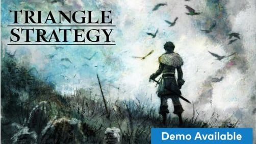
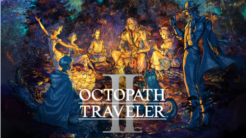

Eight travelers. Eight adventures. Eight roles to play in a new world brought to life by Square Enix. Explore each travelers story and use their abilities in and out of battle. Will you expand your horizons as the Merchant or track down a traitor as the Warrior? Where will you go? Who will join you? You alone can choose your path.
I've got more grit than I can handle.

Command a group of units as Serenoa, heir of House Wolffort, in a tangled plot where key choices you make will influence the story. The stunning HD-2D visual style blends 3D environments and modern effects with pixel-art characters and details.
Your decisions make the difference.

This game is a brand-new entry in the OCTOPATH TRAVELER series, the first installment of which was initially released in 2018 and sold over 3 million copies worldwide. It takes the series’ HD-2D graphics, a fusion of retro pixel art and 3DCG, to even greater heights.
In the world of Solistia, eight new travelers venture forth into an exciting new era. Where will you go? What will you do? Whose tale will you bring to life? Every path is yours to take
Embark on an adventure all your own.

From the masterminds that brought 13 Sentinels: Aegis Rim and Odin Sphere, ATLUS x Vanillaware presents the rebirth of tactical fantasy RPG. Fight against fate and embark on a royal adventure to regain your reign alongside trustworthy allies. Unicorn Overlord combines the timeless tactical RPG genre with overworld exploration and innovative battle system for a unique epic fantasy experience in the iconic Vanillaware style.
Liberate Your Kingdom, Reclaim Your Destiny.